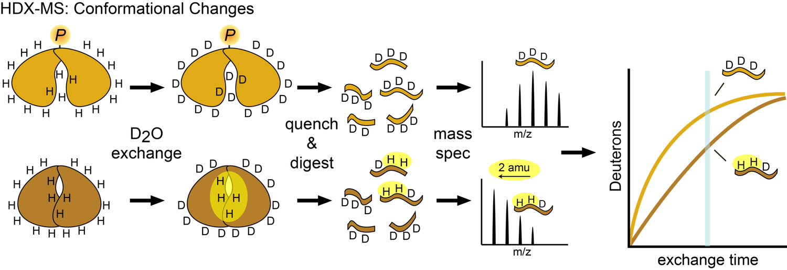
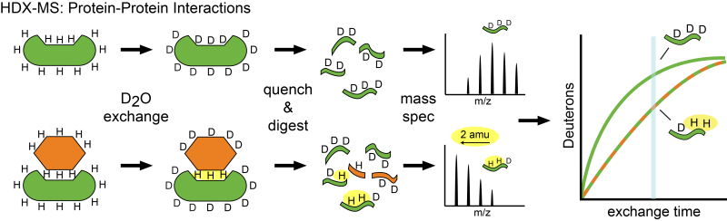

HDX-MS
Hydrogen/deuterium exchange mass spectrometry (HDX-MS) is a powerful approach for mapping protein folding, protein—ligand interactions, protein—protein interactions, and conformational changes. HDX-MS reports on the local chemical environment and solvent accessibility of the protein backbone by monitoring the exchange of peptide bond amide protons with the deuterons of a D2O solvent. Exchange rates are particularly sensitive to changes in hydrogen bonding, secondary structure, solvent accessibility, and dynamics.

Dynamic, transient protein—protein interactions are a hallmark of signaling systems. The HDX-MS approach is especially well-suited to exploring signaling protein complexes. Subtle changes in exchange rates can reveal protein surfaces involved in transient interactions. In addition, HDX-MS measurements are performed on proteins in solution, mimicking biologically-relevant environments. The exquisite sensitivity of mass spectrometry also allows for analysis of relatively complex multi-protein assemblies with low (picomolar) sample requirements.

H/D exchange is initiated by diluting the protein of interest into buffered D2O. At various time points, the exchange reaction is quenched with acid and rapidly frozen. To localize deuterium exchange to specific regions of the polypeptide backbone, the protein is proteolyzed into uniquely identifiable peptides using an acid-stable protease. The deuterium incorporation of these peptides can then be measured by monitoring the isotopic mass envelope by liquid chromatography mass spectrometry (LC-MS).